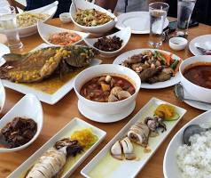

The cuisine of Davao del Sur is a flavorful reflection of its diverse cultural heritage, shaped by indigenous traditions, as well as Visayan, Filipino, and Muslim influences. Known for its use of fresh, locally sourced ingredients, the province offers dishes that highlight natural flavors, simple preparation, and a strong connection to the land and sea.
Davao del Sur's cuisine is a diverse fusion shaped by indigenous (Lumad) traditions, Muslim influences, and migrant flavors, focusing on fresh seafood, coconut milk, and tropical fruits like durian. Key influences include local, agricultural bounty, using ingredients like tuna and spices, often creating a unique, flavorful blend.

Davao del Sur, particularly Davao City, is renowned for its fresh seafood, durian-based treats, and unique grilled meats. Top popular dishes include tuna dishes (panga, tail, eye soup), carabao tapa, spicy lechon belly, and premium Davao chocolate or cacao products.

Davao del Sur, including Davao City, is renowned for its rich agricultural produce and fresh seafood. Key local ingredients include world-class cacao (tablea), Davao Durian, pomelo, mangosteen, and abundant tuna. Other notable staples include bananas, coconut, various spices, goat cheese, and unique seafood like bagaybay (tuna sperm sacs).

In Davao del Sur, food is a central pillar of cultural identity, reflecting a blend of indigenous heritage, agricultural abundance, and a "Sutokil" (Sugba-Tola-Kilaw) coastal lifestyle. Known as the Fruit Basket of the Philippines, the province's celebrations are defined by a mix of exotic harvests and traditional tribal cooking methods.